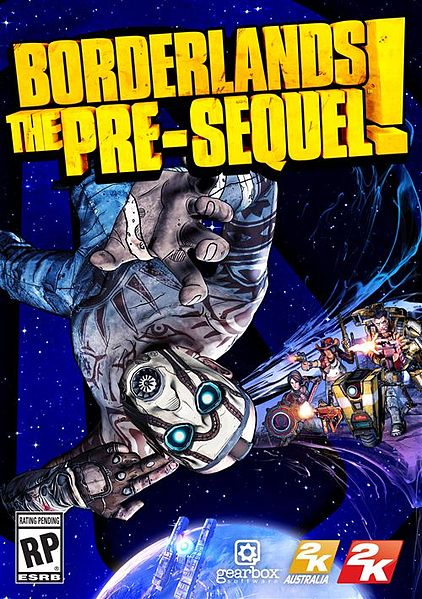

Gearbox Software was founded on February 16, 1999 by five members of the content team from the defunct developer Rebel Boat Rocker: Randy Pitchford, Brian Martel, Stephen Bahl, Landon Montgomery, and Rob Heironimus. Before Rebel Boat Rocker, Pitchford and Martel previously worked together at 3D Realms, and Montgomery previously worked at Bethesda Softworks.
They started with developing expansions to Valve Software's Half-Life.
Porting Half-Life to console platforms (each with new game content) followed, building the company's experience in console game-making, in addition to enhancing and building upon the successful Counter-Strike branch of the Half-Life franchise.
Prior to Half-Life 2, they had developed or helped develop every Half-Life expansion game or port, including Opposing Force, Blue Shift, Counter-Strike: Condition Zero, Half-Life for the Sony PlayStation 2 (including Half-Life Decay), and Half-Life for the Sega Dreamcast (including Blue Shift).
Branching out to other publishers, they pursued additional port work, each game being released with additional content, but this time from console to PC. These projects included their first non-first-person shooter, Tony Hawk's Pro Skater 3, and Halo: Combat Evolved, forging new publisher relationships with Activision and Microsoft Game Studios respectively.
Additional new development, in the form of a PC game in the James Bond franchise (James Bond 007: Nightfire) for Electronic Arts, also occurred during the company's initial 5-year period.
In 2005, they launched an original property of their creation, Brothers in Arms, with the release of Brothers in Arms: Road to Hill 30 on the Xbox, PC and PlayStation 2.
Later that year a sequel, Brothers in Arms: Earned in Blood, was launched. In 2008 Brothers in Arms: Hell's Highway was released.
2007 brought announcements of new projects based on licensed film intellectual properties, including the crime drama Heat and the science-fiction classic Aliens.
In the September 2007 issue of Game Informer, a new game franchise was revealed, the sci-fi shooter Borderlands, after which Gearbox CEO Randy Pitchford mentioned in an online interview that development on the Heat game had not yet begun, as the planned development partner for the project had gone under.
This was followed by an announcement by Sega that they would be helming a new version of rhythm game Samba de Amigo for the Wii, a departure from their signature first-person shooter titles.
Borderlands
Borderlands is an action role-playing first-person shooter video game that was developed by Gearbox Software for PlayStation 3, Xbox 360, Microsoft Windows and Mac OS X.
It is the first game in the Borderlands series.
It was first revealed in the September 2007 issue of Game Informer magazine.
The console versions of the game were released in North America on October 20, 2009, and were released in PAL countries on October 23.
The console version release for the Japanese market was made available on February 25, 2010.
The Windows version was released on October 26 for North America and then on October 29 internationally.
The Mac OS X version of the game was released on December 3, 2010 by Feral Interactive.
A sequel, Borderlands 2, was released on September 18, 2012 in the U.S. and on September 21 in other countries.
Borderlands Character List and Class:
Roland
The Soldier
Mordecai
The Hunter
Lilith
The Siren
Brick
The Berserker
Borderlands 2
Borderlands 2 is an action role-playing first-person shooter video game, developed by Gearbox Software and published by 2K Games on September 18, 2012.
It is the second game in the Borderlands series and the sequel to 2009's Borderlands.
The game was released for the Microsoft Windows, PlayStation 3, Xbox 360 and OS X platforms.
As with the first game, Borderlands 2 allows players to complete a campaign consisting of central quests and optional side-missions as one of four treasure seekers, Vault Hunter, on the planet Pandora.
Key gameplay features from the original game, such as online collaborative campaign gameplay; randomly generated loot, such as weapons and shields; and character-building elements commonly found in role-playing video games are in Borderlands 2.
The game was well-met by critics and was a financial success, selling over 5 million copies.
Downloadable content for the game has been released, including new characters and storylines. The Game of the Year Edition of the game was released in October 8, 2013 in the U.S. and October 11 internationally, including all the previous downloadable and upgrade packs except for the new campaign.
A PlayStation Vita version has been confirmed for release in 2014, and is being developed by Iron Galaxy Studios in collaboration with Gearbox.
Borderlands 2 Character List and Class:
Axton
The Commando
Zero
The Assassin
Maya
The Siren
Salvador
The Gunzerker
Gaige
The Mechromancer
Krieg
The Psycho
Borderlands News
Borderlands: The Pre-Sequel is an upcoming first-person shooter video game being developed by 2K Australia and to be published by 2K Games.
It is the third game in the Borderlands series, and a prequel to the 2012 game Borderlands 2. It is expected to be released for Windows, PlayStation 3 and Xbox 360 in late-2014.
The rumored existence of the game was first reported on April 7, 2014, and it was officially announced two days later on April 9, 2014.
Borderlands: The Pre-Sequel combines FPS gameplay with mechanics common to role-playing video games (such as quests, character building and randomly generated loot), and collaborative multiplayer campaign gameplay.
Similarly to previous Borderlands titles, the game will focus on four playable protagonists—all of whom were featured as NPCs in previous Borderlands games, working as henchmen for Handsome Jack, the antagonist of Borderlands 2. The plot will follow Handsome Jack's descent into villainy, focusing on his escape and capture of the Hyperion company's moonbase.
The game will expand upon the engine and gameplay of Borderlands 2 and introduce new gameplay mechanics, including anti-gravity, freeze weapons, and oxygen tanks which can be used to navigate environments and perform special attacks.
Borderlands Gallery
Borderlands 1
Borderlands 2

Borderlands - The Pre-Sequel